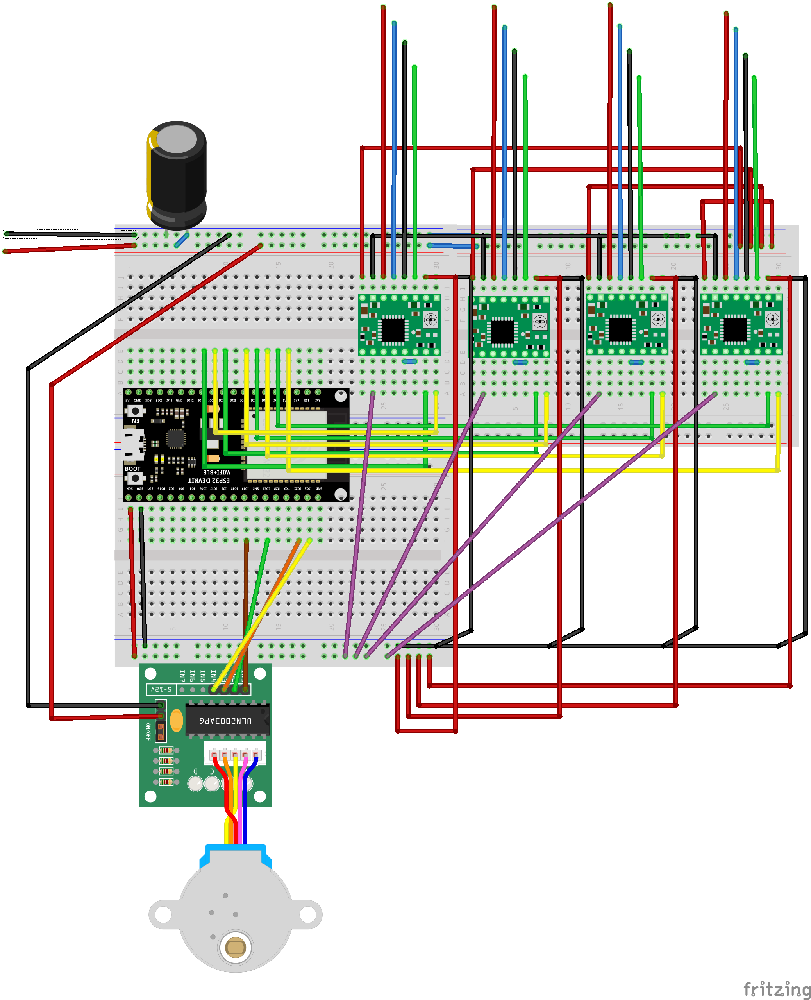

For my IOT Esp32 Remote control assignment, I integrated it with my final project. To do so, I created an ESP32 webserver with buttons that allows me to remotely control stepper motors. Here's the code:
#include <AccelStepper.h>>
#include <WiFi.h>>
#include <WebServer.h>>
// Replace with your Wi-Fi credentials
#define WIFI_SSID "MAKERSPACE"
#define WIFI_PASSWORD "12345678"
// Define stepper configurations
#define NEMA8_CONFIG 1
#define STEPPER28BYJ_CONFIG 8
// Define GPIO pin numbers for Nema 8 steppers
#define NEMA8_STEP_PIN_1 14
#define NEMA8_DIR_PIN_1 27
#define NEMA8_STEP_PIN_2 26
#define NEMA8_DIR_PIN_2 25
#define NEMA8_STEP_PIN_3 33
#define NEMA8_DIR_PIN_3 32
#define NEMA8_STEP_PIN_4 35
#define NEMA8_DIR_PIN_4 34
// Define GPIO pin numbers for 28BYJ-48 stepper
#define STEPPER28BYJ_PIN1 19
#define STEPPER28BYJ_PIN2 21
#define STEPPER28BYJ_PIN3 22
#define STEPPER28BYJ_PIN4 23
// Create instances of AccelStepper for each stepper
AccelStepper nema8Stepper1(NEMA8_CONFIG, NEMA8_STEP_PIN_1, NEMA8_DIR_PIN_1);
AccelStepper nema8Stepper2(NEMA8_CONFIG, NEMA8_STEP_PIN_2, NEMA8_DIR_PIN_2);
AccelStepper nema8Stepper3(NEMA8_CONFIG, NEMA8_STEP_PIN_3, NEMA8_DIR_PIN_3);
AccelStepper nema8Stepper4(NEMA8_CONFIG, NEMA8_STEP_PIN_4, NEMA8_DIR_PIN_4);
AccelStepper stepper28BYJ(STEPPER28BYJ_CONFIG, STEPPER28BYJ_PIN1, STEPPER28BYJ_PIN3, STEPPER28BYJ_PIN2, STEPPER28BYJ_PIN4);
// Define structure to store stepper positions for each pose
struct Pose {
long nema8Pos1;
long nema8Pos2;
long nema8Pos3;
long nema8Pos4;
long stepper28BYJPos;
};
// Define predefined poses
Pose pose1 = {1000, 2000, 3000, 4000, 5120}; // Example positions for each motor
Pose pose2 = {500, 1500, 2500, 3500, 2560}; // Example positions for another pose
// Create a WebServer instance
WebServer server(80);
// Function to move all steppers to a specific pose
void moveToPose(Pose targetPose) {
nema8Stepper1.moveTo(targetPose.nema8Pos1);
nema8Stepper2.moveTo(targetPose.nema8Pos2);
nema8Stepper3.moveTo(targetPose.nema8Pos3);
nema8Stepper4.moveTo(targetPose.nema8Pos4);
stepper28BYJ.moveTo(targetPose.stepper28BYJPos);
}
// Function to run all steppers to a specific pose
void runToPose(Pose targetPose) {
moveToPose(targetPose);
while (nema8Stepper1.isRunning() || nema8Stepper2.isRunning() || nema8Stepper3.isRunning() || nema8Stepper4.isRunning() || stepper28BYJ.isRunning()) {
nema8Stepper1.run();
nema8Stepper2.run();
nema8Stepper3.run();
nema8Stepper4.run();
stepper28BYJ.run();
}
}
void setup() {
// Start Serial communication
Serial.begin(115200);
// Connect to Wi-Fi
WiFi.begin(WIFI_SSID, WIFI_PASSWORD);
while (WiFi.status() != WL_CONNECTED) {
delay(1000);
Serial.println("Connecting to WiFi...");
}
Serial.println("Connected to WiFi");
Serial.print("IP address: ");
Serial.println(WiFi.localIP());
// Set up web server routes
server.on("/", handleRoot);
server.on("/runPose", handleRunPose);
server.begin();
// Set maximum speed and acceleration for Nema 8 steppers
nema8Stepper1.setMaxSpeed(1000);
nema8Stepper2.setMaxSpeed(1000);
nema8Stepper3.setMaxSpeed(1000);
nema8Stepper4.setMaxSpeed(1000);
nema8Stepper1.setAcceleration(500);
nema8Stepper2.setAcceleration(500);
nema8Stepper3.setAcceleration(500);
nema8Stepper4.setAcceleration(500);
// Set maximum speed and acceleration for 28BYJ-48 stepper
stepper28BYJ.setMaxSpeed(500);
stepper28BYJ.setAcceleration(200);
}
void loop() {
// Handle incoming web requests
server.handleClient();
}
Here is the circuit I used with the ESP32. Wires up top lead to steppers, two wires on the left lead to 12v power.
To see this remote control device in action, watch this video of my final project: